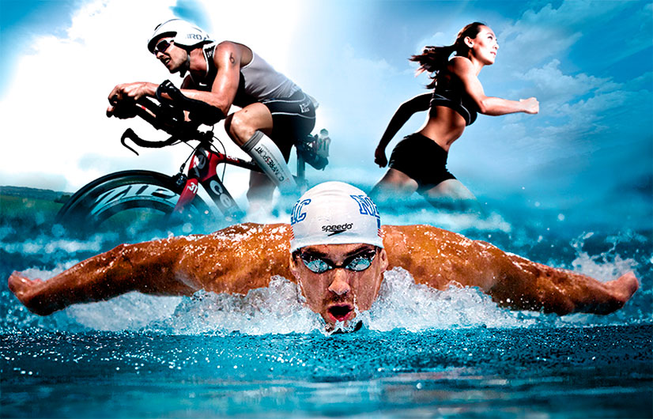
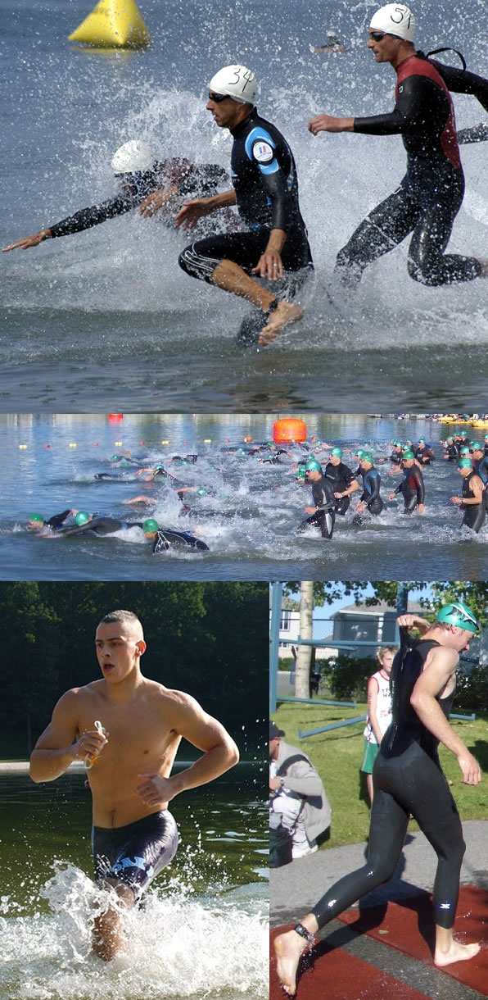
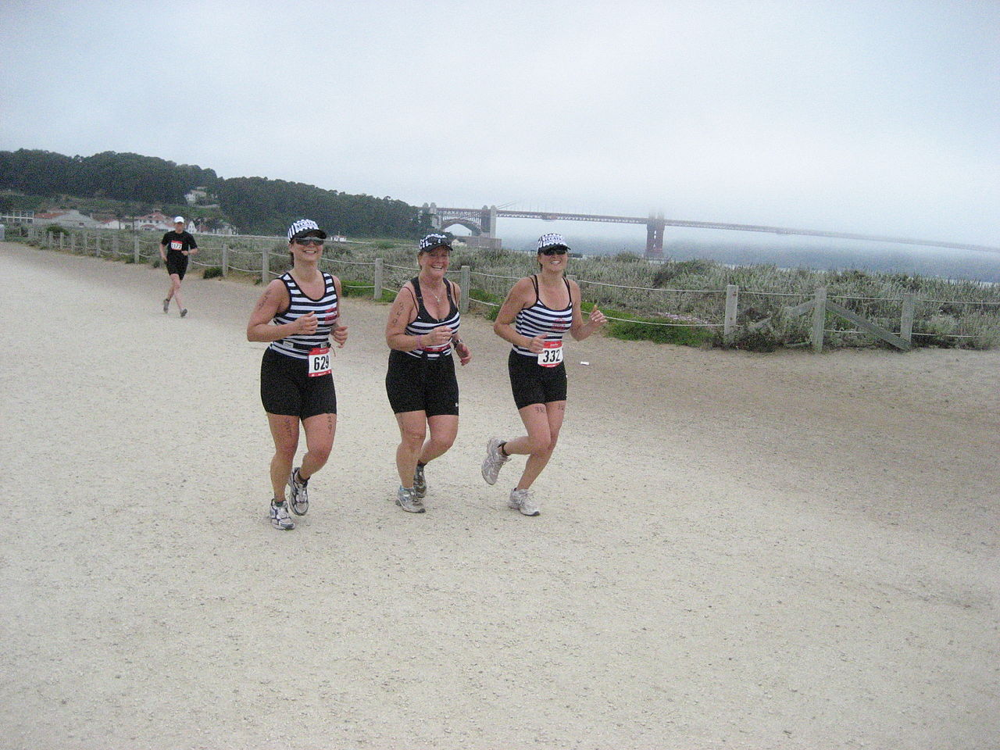
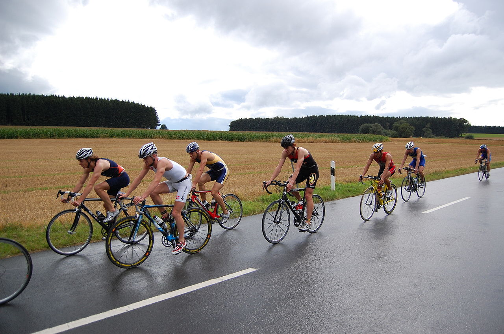

Тріатлон — олімпійський вид спорту, який включає у себе три складові: плавання, їзду на велосипеді та біг.
Існує кілька видів тріатлону:
Слово «тріатлон» походить від грецького τρεις (три) та αθλος (змагання).
У 1994 році під час чергової сесії МОК в Парижі було оголошено про включення тріатлону до програми Олімпійських ігор. Президент МОК процитував слова Кубертена, сказані ним ще у 1875 році: «Нам потрібний вид спорту, який скомпонував би плавання, їзду на велосипеді і біг, популярні сучасні динамічні види спорту, щоб завдяки їм відчувати олімпійський дух чесної гри, вправність та пристрасть».
Рухалися до цієї мети поступово. Прихильники здорового способу життя вважали, що найлегший і найдешевший спосіб застерегти себе від проблем зі здоров'ям — це почати бігати. Особливо біг для здоров'я став популярним у Новій Зеландії та Америці.
У 1971 році колишній член всеамериканської студентської команди Джек Джонстон у віці 35 років, щоб набути колишню юнацьку стрункість і легкість у рухах став учасником любительських бігових стартів, які проходили на околицях Сан-Дієго. В 1973 році Джек взяв участь у старті оригінального формату під назвою «День народження Дейва Пейна», який уже другий рік проводив 51-річний рятівник, розпочинаючи змагання з бігу на 4,5 км та завершуючи його короткою плавальною дистанцією (близько 250 м). Серед більше ніж 100 учасників Джонстон фінішував 12-м. Це було для нього великим сюрпризом, оскільки в більшості стартів він знаходився у списках наприкінці протоколу. Колишній плавець вирішив організувати змагання в подібному форматі, але збільшивши при цьому плавальну дистанцію. «Цікаво, як багато бігунів вміють плавати так, як я вмію бігати?» — подумав тоді Джек.
Джонстон звернувся в місцевий клуб бігу з проханням, щоб для його «біатлону» знайшли містечко в календарі змагань. Дон Шанахан, у якого також були подібні ідеї, запропонував Джеку включити в змагання ще велоетап. Той охоче погодився, і соратники збагатили календар бігового клубу Сан-Дієго новим стартом, а англійську мову новим словом — triathlon.
25 вересня 1974 року о 17:45 відбувся перший старт з тріатлону. Учасники послідовно долали 5 миль на велосипеді, 6 миль бігом та 500 ярдів плаванням. Запрошувались усі охочі з власними велосипедами. Нагороджувались перші п'ять, які фінішували. Переможцем став рятівник Білл Філіпс з результатом 55.44.
П'ятнадцять чоловіків прийняли виклик, і 18 лютого 1978 року стартував перший Iron Man Triathlon. Дванадцять учасників, включаючи самого Коллінза, успішно завершили дистанцію. Першим фінішував Гордон Халлер, водій таксі із Гонолулу. Його результат склав 11 годин, 46 хвилин та 58 секунд. Всі, хто фінішував, отримали в подарунок майку на пам'ять і маленьку фігурку людини із залізних трубочок.
Наступного року штормовий вітер і сильний дощ не дали змоги всім охочим взяти участь у другому старті «Залізного чоловіка», в ньому знову стартували 15 атлетів, серед яких була одна жінка, Лінн Лемейр із Бостона, яка фінішувала п'ятою в абсолютному заліку і стала, таким чином, першою Iron Woman в історії гонки. Переможцем був Том Уоррен, власник бару із Сан-Дієго.
Можливо, цим стартом закінчилась би не тільки історія Iron Man, але й розвиток тріатлону взагалі, який хоча й проводився в Сан-Дієго щороку, але залишався маловідомим місцевим змаганням, якби не присутність на двох змаганнях «Залізного чоловіка» журналіста Баррі МакДермонта. Під великим впливом емоцій Баррі написав не просто статтю в травневий номер Sport Illustrated, а маленький літературний шедевр, справжню спортивну сагу, яка викликала серед американців величезну зацікавленість до цих змагань.
Безліч телерепортажів та публікацій зробили свою справу: новий вид спорту почав свою переможну ходу по планеті. Вісімдесяті роки — справжній бум тріатлону в цілому світі. З'являються групи ентузіастів, які організують змагання з тріатлону на різноманітних дистанціях. У 1981 році відбулися перші старти з тріатлону — у Східній Німеччині, місті Лейпцигу та в голландському місті Пальмірі; в 1982 році — у місті Ніцца (Франція). Зацікавилися тріатлоном і в Радянському Союзі. Влітку 1983 року в Московській області клуб Манжосова проводить свій перший тріатлон за наступною оригінальною формулою: велогонка 60 км, плавання — 0,4 км та 12 км крос.
 